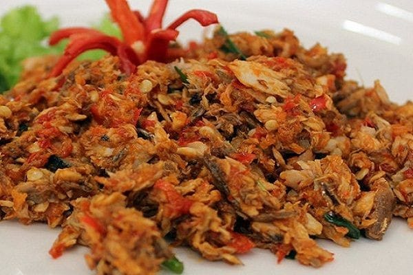

cakalang suwir Kota Maluku terkenal dengan kuliner seafood nya, salah satunya yaitu ikan cakalang. Ikan cakalang adalah salah satu jenis ikan yang banyak disukai karena tekstur dagingnya yang padat. Biasanya ikan cakalang ini dimasak menjadi beberapa olahan makanan yang lezat, antara lain abon cakalang, cakalang suwir pedas, cakalang kecap,cakalang bakar rica,dan banyak olahan lainnya .
Bahan
1 Ekor ikan cakalang
10 Buah cabai keriting